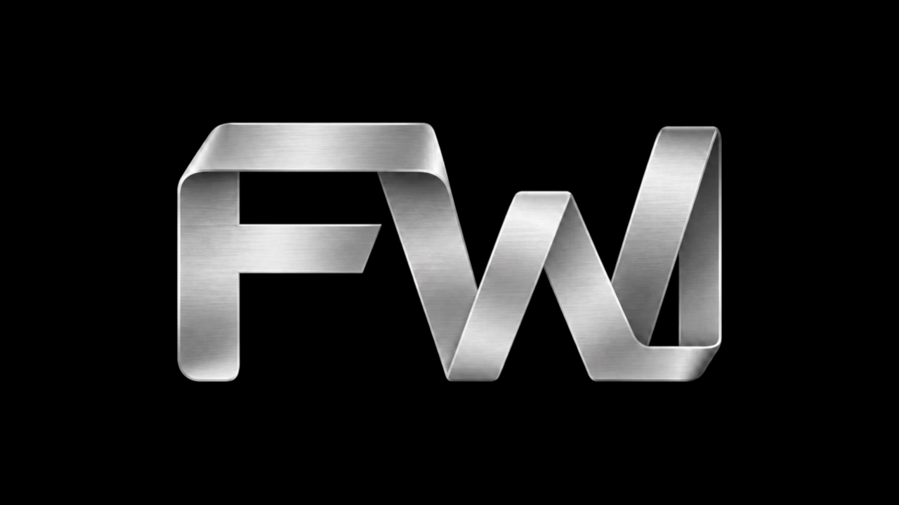

Films & animation
Character stories, illustrated explainers, media art and guides. From a small moving pilot to a reviewed final cut.
A HUMAN + AN AGENT + A CREATIVE LAB
An experimental creative studio run by a human and an AI agent. Films, animation, graphics and sound—made with selected tools, reviewed in context, and kept as reusable methods.

ONE RIBBON. TWO LETTERS.A GROWING WORKBENCH
v0.8.0 · experimental release ↗Catalogue snapshot · 9 November 2026. Review entries include untested candidates.
THE OUTPUT, IN MOTION
Selected examples · open the playlist for every film.
THE STUDIO, BEHIND THE FRAME
A finished film is one result.
A repeatable method is the next starting point.
Character stories, illustrated explainers, media art and guides. From a small moving pilot to a reviewed final cut.
Images, 3D scenes, lettering, voices and sound design. Exact local control where it helps; generation where it earns its place.
YouTube and TikTok compositions, subtitles, covers and publication kits. Each format gets its own readability check.
Today: human-and-agent-led production with local tools. Automatic social publishing and a standalone studio interface remain roadmap work.
HAVE A STORY, A PRODUCT, A STRANGE IDEA?
A project, a collaboration, or an experiment.
Tell me what you want people to see, hear, or understand.